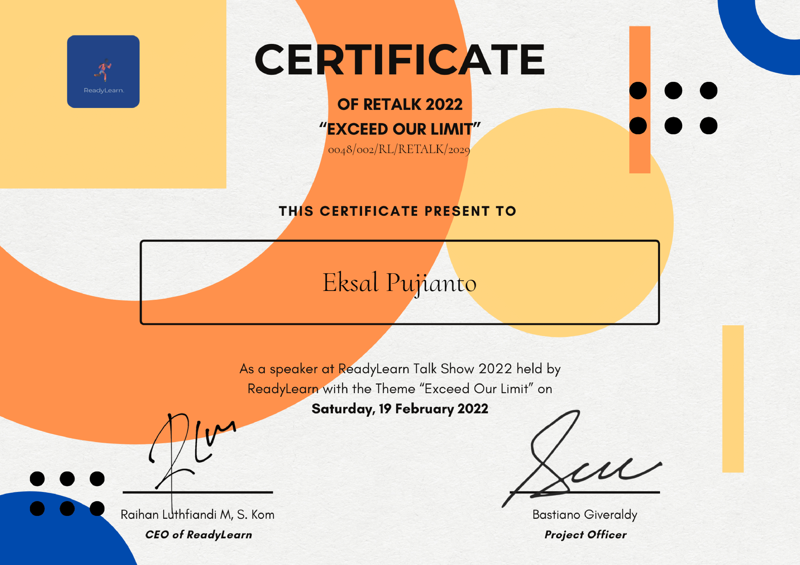
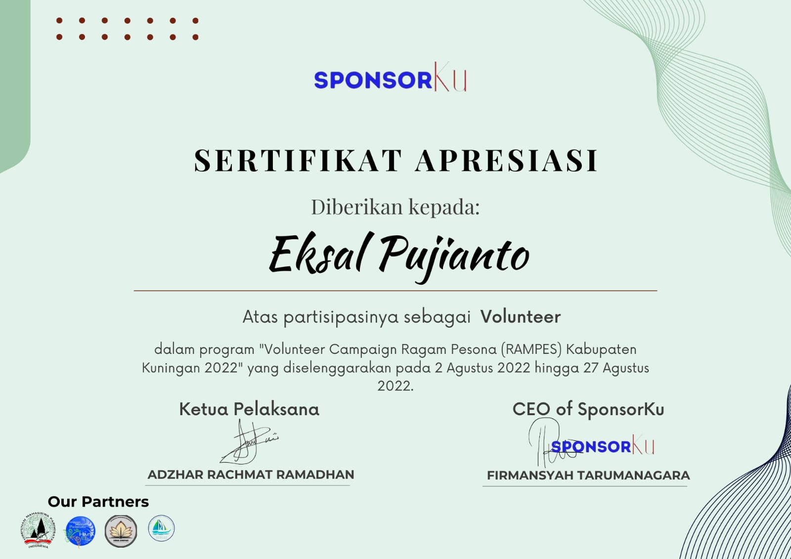
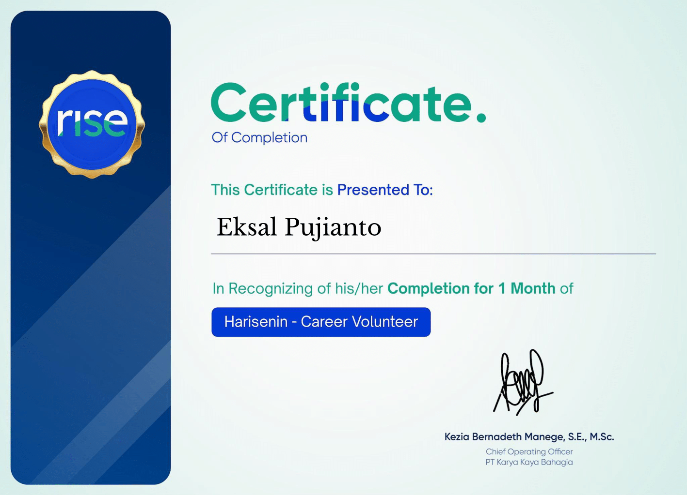

Pengalaman
Sertifikat
Berikut merupakan sertifikat dan course yang telah saya ikuti, baik akademik maupun non-akademik.

Speaker at ReadyLearn 2022
Menjadi speaker dalam acara ReadyLearn Talkshow 2022 untuk menyampaikan tips terkait persiapan tes masuk PTN.

Kormo Jobs' Academy: Microsoft Office
Menyelesaikan pelatihan basic Microsoft Office (Ms. Word, Ms. Excel, Ms. Powerpoint) selama 2 hari.

Volunteer Marketing Event (Gerakan Promosi Ragam Pesona Kuningan 2022)
Mempromosikan pariwisata yang ada di kuningan dan memberikan peningkatan pengunjung wisata sebanyak 10%.

Campaign Volunteer Harisenin.com
Mempromosikan acara dan layanan yang ditawarkan oleh Harisenin.com dengan peningkatan Pengunjung sebanyak 3%.